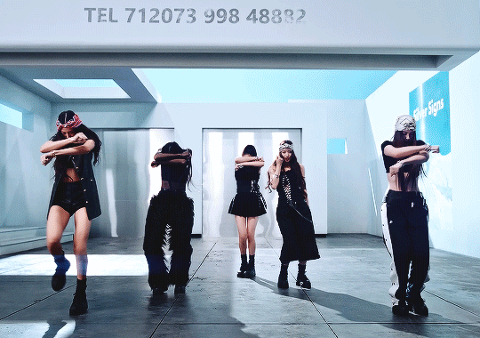
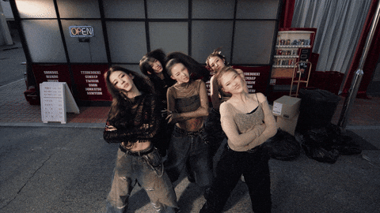
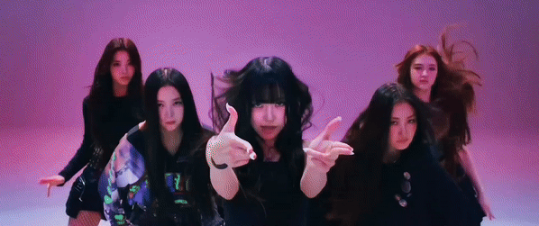
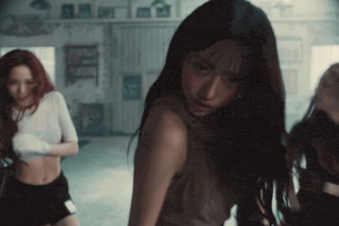
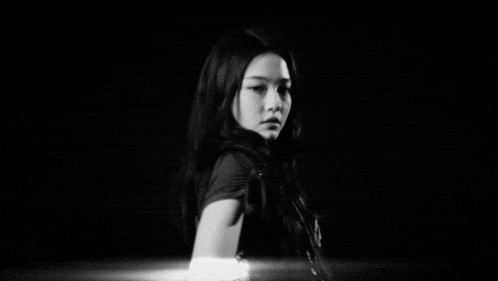
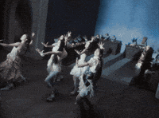

Música do Debut. É uma música divertida que gruda na cabeça, mais não cai no gosto de muitas pessoas por seu refrão repetitivo e que causa estranhamento de início.

Música que traz um frescor e contagia, com ótimas coreografias e raps.

Música do álbum recém-lançado "Bite Now". Vocais maravilhosos.

Música muito gostosa de se ouvir e uma coreografia impecável.

Música do álbum recém-lançado "Bite Now". Ficou muito famosa por seu conceito de luta e coreografia diferencial e dificíl. Fama merecida.

Uma mistura de vocais, raps, coreografia e mv sensacional. Principalmente o instrumental absurdamente bom ao final.
Traz uma estética linda de liberdade, amizade e alegria. Com vocais belos que te encanta.

Utiliza o sample da famosa obra de música clássica "Toccata and Fugue in D Minor" misturando-a com batidas modernas. Traz o conceito e mv mais lindo que já vi com estética de terror vampiresca mais com um toque de modernidade. É uma obra de arte.
Música do álbum recém-lançado "Bite Now". Tem um intrumental encantador junto de uma melodia, vocais e conceitos lindos sobre vingança abordando dificuldades em um relacionamento. É uma música que pode se ouvir repetidamente com o sentimento de ouvi-lá a primeira vez.
O primeiro lugar foi a esta extraordinária música que tem vocais surreais que te tocam e uma bela fotografia de mv. Aborda as dificuldades de se romper com um relacionamento tóxico de forma linda que toca-lhe a alma.